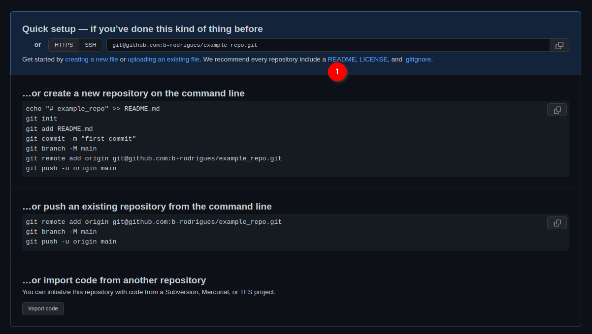
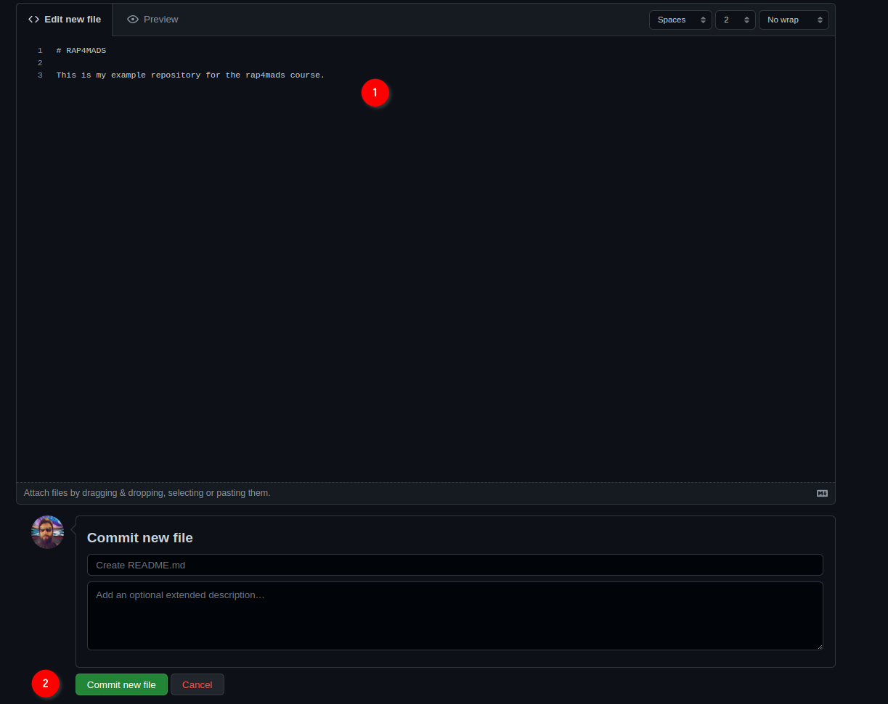
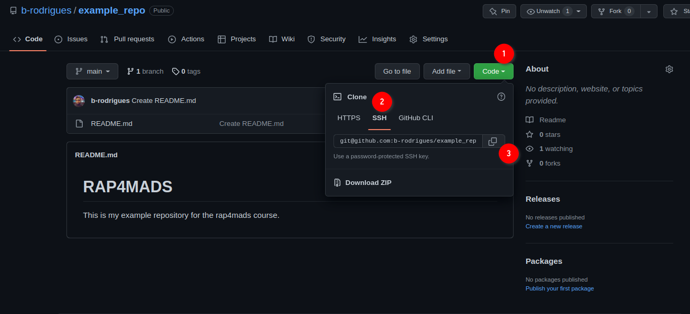
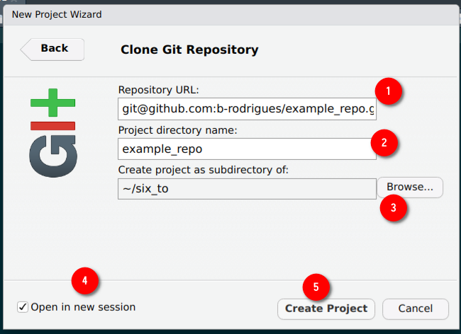
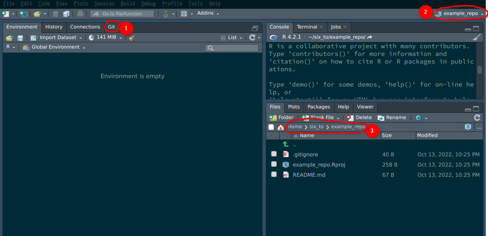

Chapter 4 Git
4.1 Introduction
Git is a software for version control. Version control is absolutely essential in software
engineering, or when setting up a RAP. If you don’t install a version control system such as Git,
don’t even start trying to set up a RAP. But what does a version control system like Git actually
do? The basic workflow of git is as follows: you start by setting up a repository for a project.
On your computer, this is nothing more than a folder with your scripts in it. However, if you’re
using git to keep track of what’s inside that folder, there will be a hidden .git folder with
a bunch of files in it. You can forget about that folder. What matters, is that when you make
changes to your files, you can first commit these changes, and then push the back to a
repository. Collaborators can copy this repository and synchronize their files saved on their
computers with your changes. Your collaborators can then also work on the files, then commit
and push the changes to the repository as well.
You can then pull back these changes onto your computer, add more code, commit, push, etc… Git makes it easy to collaborate on projects either with other collaborators, either with future you. It is possible to roll back to previous versions of your code base, you can create new branches of your project to test new features (without affecting the main branch of your code), collaborators can submit patches that you can review and merge, and and and …
In my experience, learning git is one of the most difficult things there is for students. So buckle up, because this chapter is not going to be easy. But git is incredibly powerful, and absolutely essential in our line of work. So your efforts will be worth it.
Before continuing, you might have heard of github.com: this is a website that allows programmers to set up repositories on which they can host their code. The way to interact with github.com is via Git; but there are many other website such as github.com, such as gitlab.com and bitbucket.com.
For this course, you should create an account on github.com. This should be easy enough. Then you should install git on your computer.
4.2 Installing Git
Installing git is not hard; it installs like any piece of software on your computer. If you’re
running a Linux distribution, chances are you already have git installed. To check if it’s already
installed on a Linux system, open a terminal and type which git. If a path get’s returned, like
usr/bin/gin, congratulations, it’s installed, if the command returns nothing you’ll have to
install it. On Ubuntu, type sudo apt-get install git and just wait a bit. If you’re using macOS
or Windows, you will need to install it manually. For Windows, download the installer from
here, and for macOS from here;
you’ll see that there are several ways of installing it on macOS, if you’ve never head of homebrew
or macports then install the binary package from
https://sourceforge.net/projects/git-osx-installer/.
4.3 Setting up a repo
Ok so now that git is installed, we can actually start using it. First, let’s start by creating a new repository on github.com. As I’ve mentioned in the introductory paragraph, git will allow you to interact with github.com, and you’ll see in what ways soon enough. For now, login to your github.com account, and create a new repository by clicking on the ‘plus’ sign in the top right corner of the your profile page and then choosing ‘New repository’:

In the next screen, choose a nice name for your repository and ignore the other options, they’re not important for now. Then click on ‘Create repository’:

Ok, we’re almost done with the easy part. The next screen tells us we can start interacting with the repository. For this, we’re first going to click on ‘README’:

This will add a README file that we can also edit from github.com directly:

Add some lines to the file, and then click on ‘Commit new file’. You’ll end up on the main page of your freshly created repository. We are now done with setting up the repository on github.com. We can now clone the repository onto our machines. For this, click on ‘Code’, then ‘SSH’ and then on the copy icon:

Now, to make things easier on you, we’re going to use Rstudio as an interface for git. But you should know that git can be used independently from a terminal application on Linux or macOS, or from Git Bash on Windows, and you should definitely get familiar with the Linux/macOS command line at some point if you wish to become a data scientist. This is because most, if not all, servers that you are going to interact with in your career are running some flavour of Linux. But since the Linux command is outside the scope of this course, we’ll use Rstudio instead.
4.4 Cloning the repository onto your computer
Start Rstudio and click on ‘new project’ and then ‘Version Control’:

Then choose ‘Git’:

Then paste the link from before into the ‘Repository URL’ field, the ‘project directory name’ will fill out automatically, choose where to save the repository in your computer, click on ‘Open in new session’ and then on ‘Create Project’:

A new Rstudio window should open. There are several things that you should pay attention to now:

- indicates that this project is git-enabled so to speak. (2) shows you that Rstudio is open
inside the
example_repo(or whatever you named your repo to) project, and (3) shows you the actual repository that was downloaded from github.com at the path you chose before. You will also see theREADMEfile that we created before - indicates that this project is git-enabled so to speak. (2) shows you that Rstudio is open
inside the
example_repo(or whatever you named your repo to) project, and (3) shows you the actual repository that was downloaded from github.com at the path you chose before. You will also see theREADMEfile that we created before.